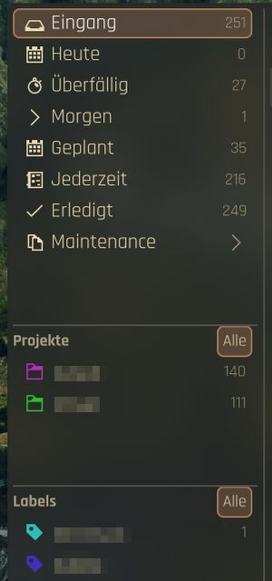
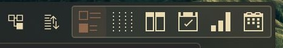
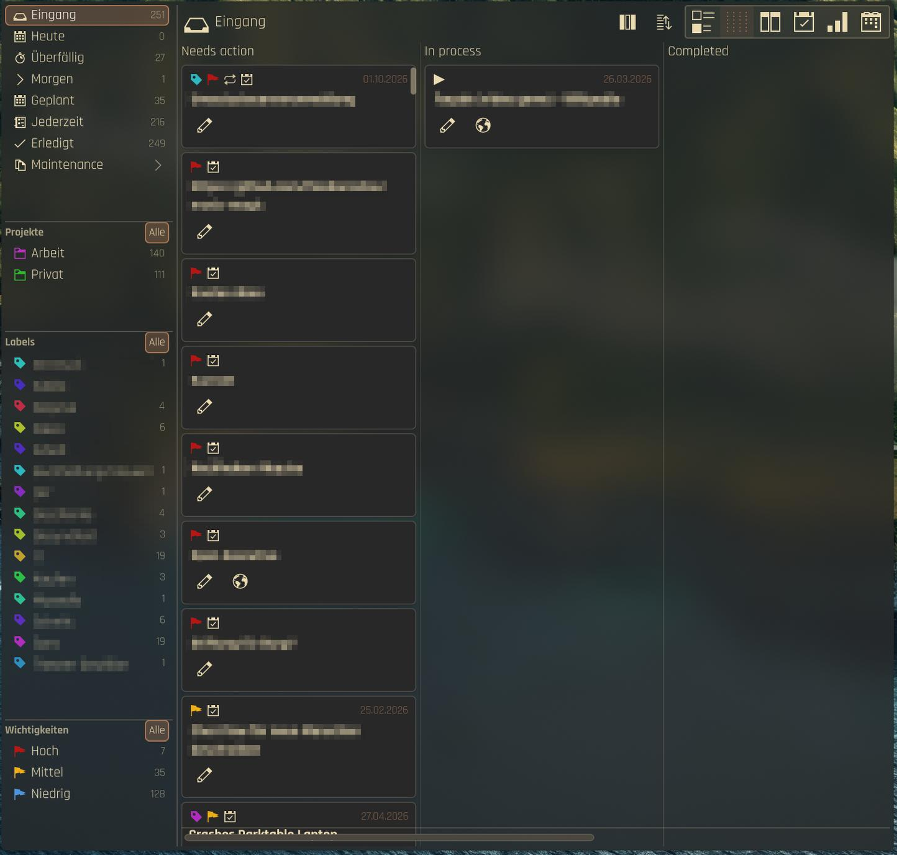
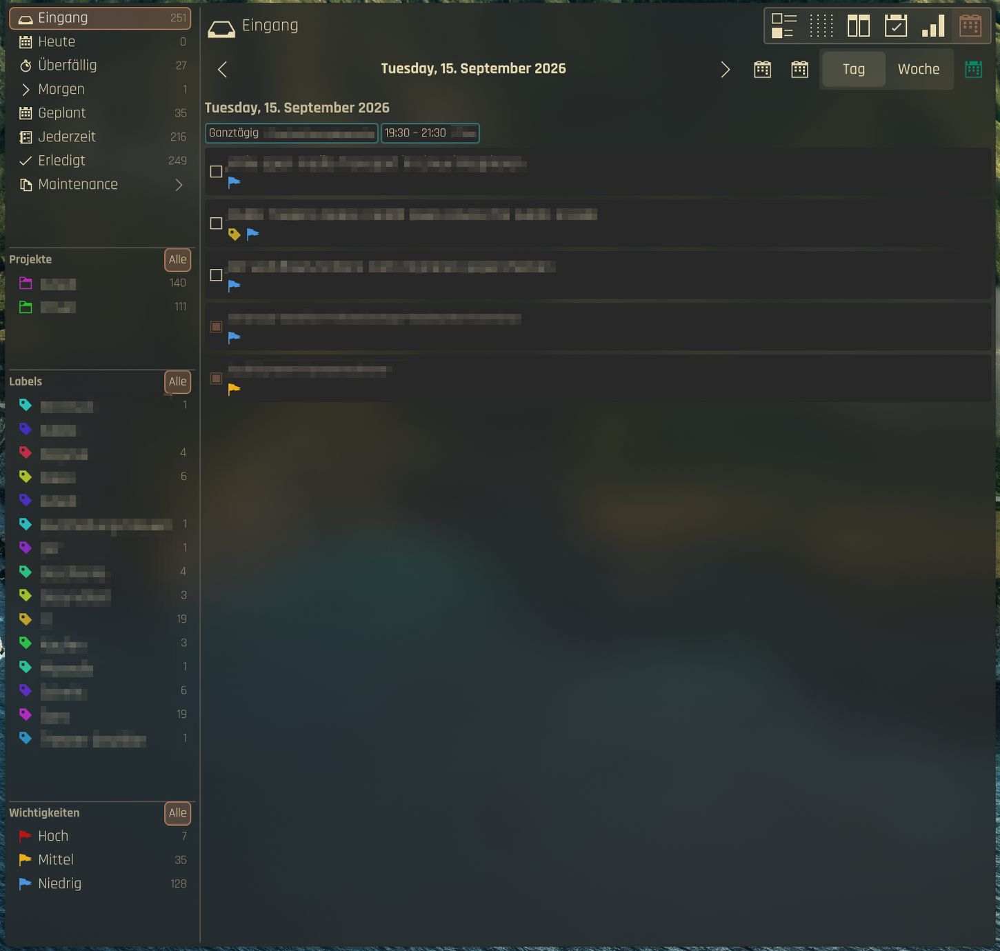
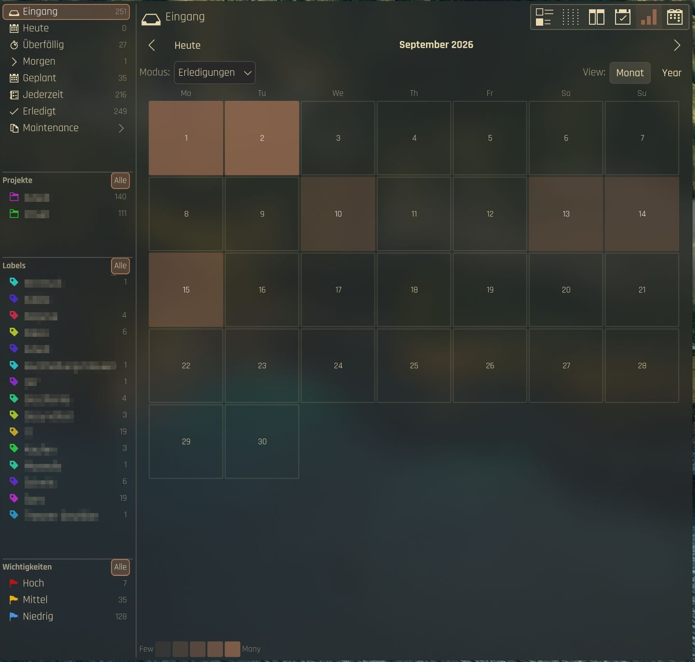
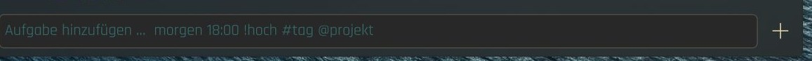

Inbox → Today flow
Von Inbox zu Heute
Inbox, Today, Tomorrow, Scheduled, Anytime, Recurring, Unlabeled, and Completed views — all from Akonadi.
Inbox, Heute, Morgen, Geplant, Jederzeit, Wiederkehrend, Ohne Label und Erledigt – alles aus Akonadi.
Quick Add
Quick Add
tomorrow 18:00 !high #tag @project — natural-language task entry with fuzzy matching.
tomorrow 18:00 !high #tag @project – Aufgaben in natürlicher Sprache eingeben, mit unscharfer Zuordnung.
Projects & Labels
Projekte & Labels
Akonadi calendars as projects, CalDAV categories as labels. Color-coded, filterable, drag-and-drop subtasks.
Akonadi-Kalender als Projekte, CalDAV-Kategorien als Labels. Farbcodiert, filterbar, Unteraufgaben per Drag-and-drop.
CalDAV round-trip
CalDAV-Abgleich
Uses your existing Nextcloud / KOrganizer / Merkuro CalDAV setup. No separate login.
Nutzt dein vorhandenes CalDAV-Setup aus Nextcloud, KOrganizer oder Merkuro. Kein separater Login.
Panel & Desktop
Panel & Desktop
Works as a panel flyout and a desktop widget. Shared settings, shared config, same full editor.
Funktioniert als Panel-Popup und als Desktop-Widget. Gemeinsame Einstellungen, gleicher vollständiger Editor.
Translations
Übersetzungen
German, Spanish, French, Japanese, Simplified Chinese — with Quick Add understanding your language too.
Deutsch, Spanisch, Französisch, Japanisch und vereinfachtes Chinesisch – Quick Add versteht auch deine Sprache.
Your own views
Eigene Ansichten
Save filters by project, label, status, due date and priority as views of their own, with badges in the sidebar.
Speichere Filter nach Projekt, Label, Status, Fälligkeit und Priorität als eigene Ansichten, mit Zähler in der Seitenleiste.
Sort your way
Sortieren, wie du willst
Multi-level sorting, by default Priority › Due › A–Z. Global or per view, with many sort keys.
Mehrstufige Sortierung, standardmäßig Priorität › Fällig › A–Z. Global oder pro Ansicht, mit vielen Sortierschlüsseln.
Calendar-aware
Kalenderbewusst
Optionally silence reminders during ongoing calendar events. You pick which event calendars count.
Erinnerungen lassen sich während laufender Kalendertermine stummschalten. Du wählst, welche Terminkalender zählen.
Everything in its place
Alles an seinem Platz
The sidebar keeps your tasks sorted the way you think: built-in views with live counts, your projects and your labels.
Die Seitenleiste ordnet deine Aufgaben so, wie du denkst: eingebaute Ansichten mit Live-Zählern, deine Projekte und deine Labels.
- Views such as Inbox, Today, Overdue, Tomorrow, Scheduled, Anytime and Completed
- Projects are your Akonadi calendars
- Labels are CalDAV categories, color-coded and filterable
- Order and visibility can be changed in the Sidebar settings
- Ansichten wie Inbox, Heute, Überfällig, Morgen, Geplant, Jederzeit und Erledigt
- Projekte sind deine Akonadi-Kalender
- Labels sind CalDAV-Kategorien, farbcodiert und filterbar
- Reihenfolge und Sichtbarkeit lassen sich in den Seitenleisten-Einstellungen ändern

One task set, six views
Ein Aufgabenbestand, sechs Ansichten
A switcher in the header changes how the same filtered tasks are shown. The sidebar selection or Smart View decides what you see, the view mode decides how.
Ein Umschalter im Kopf ändert, wie dieselben gefilterten Aufgaben dargestellt werden. Die Auswahl in der Seitenleiste oder eine Smart View bestimmt, was du siehst, der Ansichtsmodus, wie.
- List: the classic task list with inline editor
- Kanban: columns and cards
- Swimlanes: lanes by project, label, priority or parent task × day, week or month
- Project plan: projects × time with a planning horizon
- Heatmap: day cells by due date or completions
- Calendar + tasks: events and tasks of a day
- Liste: die klassische Aufgabenliste mit Inline-Editor
- Kanban: Spalten und Karten
- Swimlanes: Bahnen nach Projekt, Label, Priorität oder Elternaufgabe × Tag, Woche oder Monat
- Projektplan: Projekte × Zeit mit Planungshorizont
- Heatmap: Tageszellen nach Fälligkeit oder Erledigungen
- Kalender + Aufgaben: Termine und Aufgaben eines Tages
Swimlanes and Project plan are new in 0.4 and not yet verified by hand.
Swimlanes und Projektplan sind neu in 0.4 und noch nicht von Hand geprüft.

Move work along
Arbeit weiterschieben
Cards sit in columns such as Needs action, In process and Completed. Drag a card to another column and Kurrent writes the matching field back through Akonadi. The column source is configurable in the settings.
Karten liegen in Spalten wie Needs action, In process und Completed. Ziehst du eine Karte in eine andere Spalte, schreibt Kurrent das passende Feld über Akonadi zurück. Die Spaltenquelle ist in den Einstellungen wählbar.
Drag and drop between columns is implemented and unit-tested, but not yet verified by hand.
Drag-and-drop zwischen Spalten ist umgesetzt und per Test abgedeckt, aber noch nicht von Hand geprüft.

Tasks next to your day
Aufgaben neben deinem Tag
Calendar + tasks puts the events of the selected day beside your tasks. Switch between Day and Week. Events come from your Akonadi calendars, so what you see matches KOrganizer and Merkuro.
Kalender + Aufgaben zeigt die Termine des gewählten Tages neben deinen Aufgaben. Wechsle zwischen Tag und Woche. Die Termine stammen aus deinen Akonadi-Kalendern und entsprechen deshalb KOrganizer und Merkuro.

See the load at a glance
Die Last auf einen Blick
The heatmap colors each day of the month by how many tasks are due or were completed. Switch the mode, or jump to the year view to spot busy weeks early.
Die Heatmap färbt jeden Tag des Monats danach, wie viele Aufgaben fällig sind oder erledigt wurden. Wechsle den Modus oder springe in die Jahresansicht, um volle Wochen früh zu erkennen.

Quick Add
Quick Add
Type a task in plain language and Kurrent fills in the fields. Parts you leave out stay empty, names are matched fuzzily against your projects and labels.
Tippe eine Aufgabe in normaler Sprache, und Kurrent füllt die Felder aus. Was du weglässt, bleibt leer, Namen werden unscharf mit deinen Projekten und Labels abgeglichen.
Send invoiceRechnung sendenTitleTiteltomorrow 18:00morgen 18:00Date and timeDatum und Uhrzeit!high!hochPriorityPriorität#tagLabelLabel@project@projektProjectProjekt
- Long text wraps and the field grows; Enter adds the task, Shift+Enter inserts a line break
- Clicking the plus button with an empty field opens the full editor
- Quick Add understands your interface language too
- Langer Text bricht um und das Feld wächst; Enter legt die Aufgabe an, Shift+Enter fügt einen Zeilenumbruch ein
- Ein Klick auf das Plus bei leerem Feld öffnet den vollen Editor
- Quick Add versteht auch deine Oberflächensprache
Panel, notifications and keyboard
Panel, Benachrichtigungen und Tastatur
- Panel badge: open tasks, tasks for tomorrow or high priority, as a number or a dot; the overdue color is configurable
- Panel tooltip: choose what it summarizes, from open tasks to all views
- Join button for
http(s)meeting links, in the row and in the editor - Reminders can stay quiet while a calendar event is running
- KRunner:
task today,task <search>and adding tasks - Global shortcuts Meta+Shift+K and N, plus a D-Bus interface to show the widget or add a task
- Panel-Badge: offene Aufgaben, Aufgaben für morgen oder mit hoher Priorität, als Zahl oder Punkt; die Farbe für Überfälliges ist einstellbar
- Panel-Tooltip: wähle, was er zusammenfasst, von offenen Aufgaben bis zu allen Ansichten
- Beitreten-Knopf für
http(s)-Meeting-Links, in der Zeile und im Editor - Erinnerungen können still bleiben, solange ein Kalendertermin läuft
- KRunner:
task today,task <Suche>und Aufgaben anlegen - Globale Tastenkürzel Meta+Shift+K und N, dazu eine D-Bus-Schnittstelle, um das Widget zu zeigen oder eine Aufgabe anzulegen
KRunner and the global shortcuts are new in 0.4 and not yet verified by hand.
KRunner und die globalen Tastenkürzel sind neu in 0.4 und noch nicht von Hand geprüft.
How it works
So funktioniert es
Akonadi stays the source of truth. Every change goes through Akonadi jobs, and the widget only keeps an optimistic cache in front of it. There is no second task database.
Akonadi bleibt die Quelle der Wahrheit. Jede Änderung läuft über Akonadi-Jobs, und das Widget hält nur einen optimistischen Cache davor. Es gibt keine zweite Aufgabendatenbank.
- Changes show up at once and are rolled back if Akonadi refuses them
- A banner shows when Akonadi is offline (red) or syncing (yellow)
- Merge conflicts open a wizard that walks through one field at a time
- If widget and plugin versions differ, a warning explains how to reinstall
- Änderungen erscheinen sofort und werden zurückgenommen, wenn Akonadi sie ablehnt
- Ein Banner zeigt, wenn Akonadi offline (rot) oder am Synchronisieren (gelb) ist
- Bei Merge-Konflikten führt ein Assistent Feld für Feld durch die Auflösung
- Weichen Widget- und Plugin-Version voneinander ab, erklärt eine Warnung die Neuinstallation
Install
Installation
- Set up your calendar in KOrganizer or Merkuro: add a DAV groupware resource, choose Nextcloud, enter server URL, user name and app password, and enable the task (VTODO) collections. Check with
akonadictl status. - Run the one-liner from the box above. It downloads the prebuilt plugin and the widget from the latest release into
~/.local. - Add the Kurrent widget to your panel or desktop.
- Richte deinen Kalender in KOrganizer oder Merkuro ein: DAV-Groupware-Ressource hinzufügen, Nextcloud wählen, Server-URL, Benutzername und App-Passwort eintragen und die Aufgabensammlungen (VTODO) aktivieren. Prüfen mit
akonadictl status. - Führe den Einzeiler aus der Box oben aus. Er lädt das fertige Plugin und das Widget aus dem neuesten Release nach
~/.local. - Füge das Widget Kurrent zu deinem Panel oder Desktop hinzu.
Options for the installer: --tag v0.4 pins a release, --from-source compiles instead of using the Arch-built plugin, --no-deps skips distro packages. It checks for Plasma 6, Qt 6 and KF6 first and knows package lists for Arch, Fedora/RHEL, Debian/Ubuntu and openSUSE.
Optionen des Installers: --tag v0.4 pinnt ein Release, --from-source kompiliert statt des auf Arch gebauten Plugins, --no-deps überspringt Distributionspakete. Er prüft zuerst Plasma 6, Qt 6 und KF6 und kennt Paketlisten für Arch, Fedora/RHEL, Debian/Ubuntu und openSUSE.
Configuration
Konfiguration
Right-click the widget and choose Configure Kurrent. Settings apply to every Kurrent instance and live in ~/.config/com.github.shrippen.kurrent/kurrentrc.
Rechtsklick auf das Widget und Kurrent einrichten. Die Einstellungen gelten für jede Kurrent-Instanz und liegen in ~/.config/com.github.shrippen.kurrent/kurrentrc.
| PageSeite | What you setWas du einstellst |
|---|---|
| GeneralAllgemein | Default view and completed tasksStandardansicht und erledigte Aufgaben |
| AppearanceDarstellung | Blurred wallpaper background via PlasmaVerschwommener Hintergrund über Plasma |
| SidebarSeitenleiste | Row size, order and visibilityZeilengröße, Reihenfolge und Sichtbarkeit |
| TasksAufgaben | Sorting (global or per view) and the default project for new tasksSortierung (global oder pro Ansicht) und Standardprojekt für neue Aufgaben |
| ViewsAnsichten | Smart Views, Kanban, Swimlanes and Project planSmart Views, Kanban, Swimlanes und Projektplan |
| PanelPanel | Badge mode, dot or number, tooltipBadge-Modus, Punkt oder Zahl, Tooltip |
| NotificationsBenachrichtigungen | Reminders, quiet during calendar eventsErinnerungen, still bei Kalenderterminen |
| Projects and LabelsProjekte und Labels | Which calendars and labels are enabled or hiddenWelche Kalender und Labels aktiv oder verborgen sind |
Questions
Fragen
Why is the KDE Store package not enough?Warum reicht das Paket aus dem KDE Store nicht?
The .plasmoid from the Store is only the widget UI. The Akonadi backend is a compiled plugin, libkurrentplugin.so, which the Store cannot ship. Without it Kurrent shows how to get the plugin instead of a QML error.
Das .plasmoid aus dem Store enthält nur die Widget-Oberfläche. Das Akonadi-Backend ist ein kompiliertes Plugin, libkurrentplugin.so, das der Store nicht ausliefern kann. Ohne es zeigt Kurrent, wie du das Plugin bekommst, statt eines QML-Fehlers.
“Get New Widgets” updates only the UI. After a Store update, run the one-liner again; until then a version mismatch warning appears.
„Neue Widgets holen“ aktualisiert nur die Oberfläche. Führe nach einem Store-Update den Einzeiler erneut aus; bis dahin erscheint eine Warnung zur Versionsabweichung.
Does Kurrent have its own login or database?Hat Kurrent ein eigenes Login oder eine eigene Datenbank?
No. Kurrent reads and writes the calendars you already set up in KDE PIM. There is no separate CalDAV login and no parallel task database.
Nein. Kurrent liest und schreibt die Kalender, die du in KDE PIM schon eingerichtet hast. Es gibt kein separates CalDAV-Login und keine parallele Aufgabendatenbank.
Does it work on immutable distros?Funktioniert es auf unveränderlichen Distributionen?
Yes, with an extra step. On Fedora Atomic layer the dependencies with rpm-ostree install, reboot and run the installer with --no-deps; on openSUSE MicroOS use transactional-update pkg install first. Or run the installer inside Toolbx or Distrobox. Kurrent itself installs under ~/.local, which survives reboots.
Ja, mit einem Zusatzschritt. Unter Fedora Atomic installierst du die Abhängigkeiten mit rpm-ostree install, startest neu und führst den Installer mit --no-deps aus; unter openSUSE MicroOS zuerst transactional-update pkg install. Oder starte den Installer in Toolbx oder Distrobox. Kurrent selbst landet in ~/.local, das Neustarts übersteht.
Which distributions are supported?Welche Distributionen werden unterstützt?
The prebuilt plugin is built on Arch Linux and linked against its Plasma 6 and KDE PIM. On other distributions the installer compiles from source. AUR and COPR packages are planned.
Das fertige Plugin ist auf Arch Linux gebaut und gegen dessen Plasma 6 und KDE PIM gelinkt. Auf anderen Distributionen kompiliert der Installer aus dem Quellcode. Pakete für AUR und COPR sind geplant.
Roadmap
Roadmap
Toward 1.0: distribution packages (AUR and COPR, then OBS and Debian if cheap), keyboard-first use, an undo control in the header and more polish. Out of scope for 1.0: Markdown notes, attachments, a login of its own and CalDAV without Akonadi.
Auf dem Weg zu 1.0: Distributionspakete (AUR und COPR, danach OBS und Debian, wenn es wenig kostet), Bedienung per Tastatur, ein Rückgängig-Knopf im Kopf und mehr Feinschliff. Nicht Teil von 1.0: Markdown-Notizen, Anhänge, ein eigenes Login und CalDAV ohne Akonadi.
Details in ROADMAP.md and the changelog.
Details in der ROADMAP.md und im Changelog.